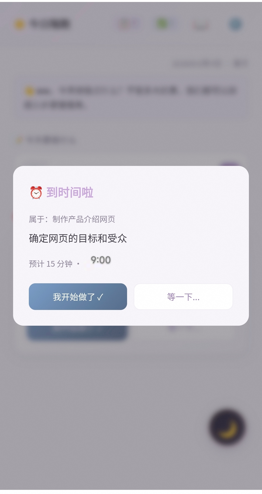
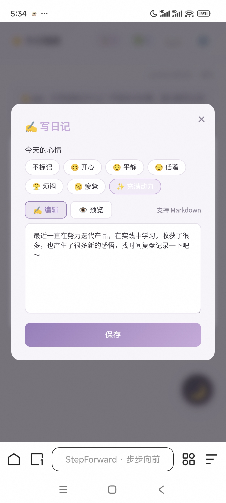
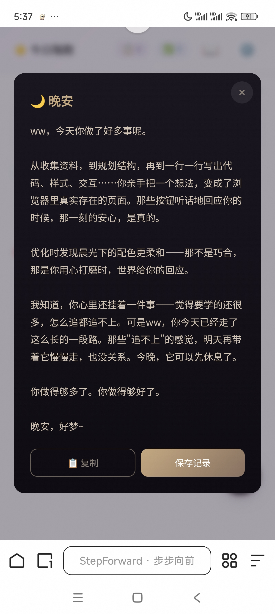

产品作品
我独立负责的产品与项目。从 0 到 1，从定义到迭代。
StepForward（步步向前）
2026.07 – 至今
AI 任务拆解 × 情绪陪伴 · 独立产品负责人
一句话定位： 当你动不起来的时候，先接住你的情绪，再陪你慢慢启动。
核心亮点：
- 🎯 从 0 到 1 主导产品全流程：v1.0 → v2.2.8 持续迭代上线，20+ 版本
- 🧠 AI 架构决策：多 Provider 接入（OpenAI 兼容 + Anthropic 双协议、6+ 模型），分场景匹配模型、自动降级；关闭思考模式，以 20 条测试 prompt 测算单次拆解 token 平均约降 40-60%
- 🎭 多 AI 角色设计：幕僚（拆解）/ 会夸你的好朋友（完成）/ 知心陪伴者（情绪）/ 笔友（日记）/ 知心陪伴者（晚安）
- 🛡️ 安全边界设计：前端 24 关键词硬编码 + AI 辅助识别双机制，接入 3 条 24h 援助热线
- 📝 迭代方法论：白屏危机后建立「稳定基线 + 单条增量 + 发布前验证」流程
开发模式： AI 协作开发（vibe coding），产品定义、交互设计、验收标准与迭代决策由本人主导。
产品使用流程

拆解 · 幕僚

完成 · 好朋友

情绪 · 知心陪伴者

日记 · 笔友

晚安 · 知心陪伴者
🌱
同一个 AI，五种人格
在每一个需要的时刻，用对的方式陪你
ListentoMe · 精听练习
2026.10 – 至今
把「听不懂」练成「听得懂」的精听工具 · 独立产品人
一句话定位： 导入任何英文材料，自动切成语块，一句一句地听、跟读、标记，直到真的听懂。
核心亮点：
- 🔁 精听闭环：导入（文本 / PDF）→ 自动切分语块（可手动微调）→ 逐句精听 → 跟读录音 → 标记复习，跨会话自动续听
- 🔒 本地优先：材料与进度全部存在本地，PDF 本地解析不上传；PWA 离线可用、可安装为独立应用
- 🗣️ 跟读评分：Web Speech API 优选神经语音朗读，跟读自动评分反馈
- 🧱 零构建工程：纯 ES Modules + localStorage 分版本 schema，MVP 冻结后按账本小步迭代
使用过程演示 · 自动播放（共 4 步）


① 导入材料粘贴文本或选本地 PDF
② 切分语块自动切分，可手动微调
③ 逐句精听播放 · 跟读 · 录音评分
④ 标记复习难句进复习队列，续听不断
更多作品